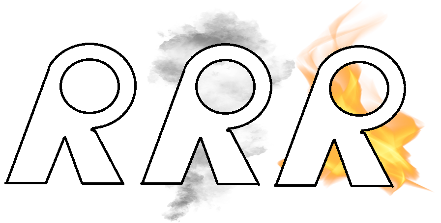

What is Robby Rescue Robot?
Robby Rescue Robot is a platform that can teach a community how to find signs that of a disaster and how to go about preventing or reacting to it. One of the educational games that we made taught basic fire prevention, safety, and escape.